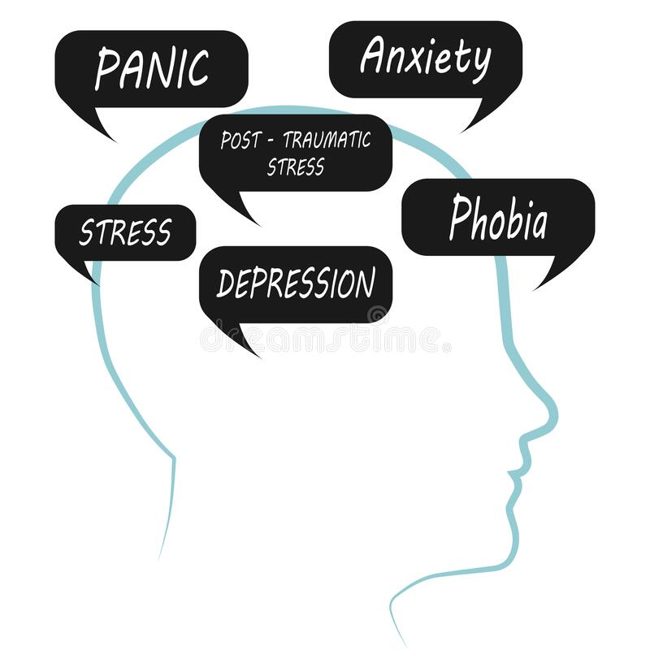

El consumo de drogas puede tener una variedad de efectos sobre el cuerpo y la mente, y los efectos especifico
pueden variar dependiendo del tipo de de droga consumida y la cantidad y frecuencia de uso.
En general, las drogas pueden provocar los siguientes efectos:
Cambios en la Percepcion:
Muchas drogas pueden alterar la forma de en la que el cerebro procesa la informacion sensorial,
lo que puede llevar a cambios en la percepcion visual, auditiva o tactil.
Cambios en el estado de animo:
Las drogas pueden producir euforia, ralajacion, sensacion de bienestar o, en algunos casos, ansiedad,
paradoja o depresion. 
Problemas de memoria y concentracion:
El uso de las drogas puede afectar la memoria y la capacidad para concentrarse
Problemas de salud fisica:
El consumo de drogas puede tener efectos perjudiciales sobre el cuerpo, incluyendo daño
al higado, pulmones, corazon y otros organos.
Adiccion:
Algunas drogas tienen un alto potencial de crear adiccion, lo que puede llevar a problemas
de salud mental y fisica a largo plazo.
problemas sociales y legales:
El uso de drogas puede tener consecuencias sociales y legales, incluyendo problemas en el lugar
de trabajo, problemas legales y problemas en las relaciones interpersonales.
Es importante destacar que los efectos de las drogas pueden variar significativamente segun el individuo,
la dosis y tipo de la droga, por lo que es importante buscar informacion precisa y hablar con un profecional
de la salud si esta preocupado por el consumo de drogas.